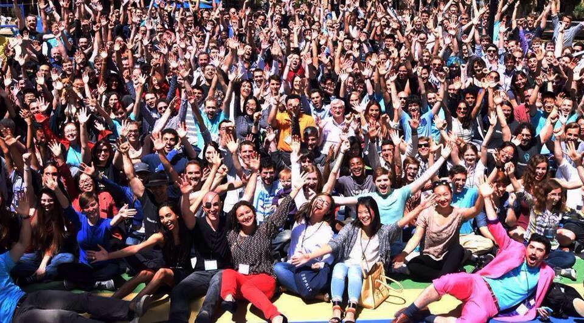
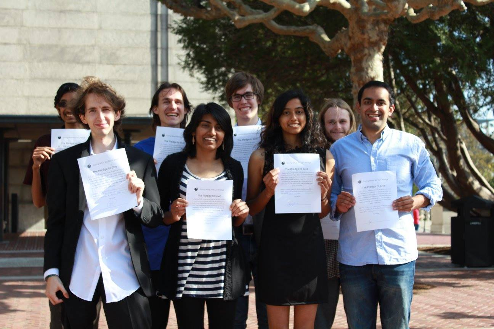

"...Anna decides that being a person with cancer who starts a cancer charity is a bit narcissistic, so she starts a charity called The Anna Foundation for People with Cancer Who Want to Cure Cholera.”
--John Green, The Fault in Our Stars
What is Effective Altruism?
Effective altruists are the cancer patients who cure cholera. We spend our time obsessing over how to do the most good possible, how to solve the biggest problems we can -- whether those problems personally affect us or not.

Effective Altruism Global 2015, the biggest ever gathering of the effective altruist community.
We operate on three basic principles:
Consequentialism: We do not believe that it's the thought that counts. We evaluate our actions based on their consequences for well-being, not on what we meant to do or whether we were following the right rules.
Egalitarianism: We believe that every being who suffers deserves care. Those who happened to be born in our own nation, generation, or species are not automatically superior.
Maximization: We see no reason to stop when we could do more. We are always looking for ways to get more leverage, better skills, and more resources so we can improve more lives.
So what does this mean in practice? What are effective altruists doing?
We're changing incentives in the international aid community by demanding and rewarding rigorous evidence of impact rather than emotional advertisement and miraculous claims
We're getting top researchers and entrepreneurs to invest in ethical and safe implementations of world-changing technologies like artificial intelligence
We're helping a generation of ambitious young people realize their potential through research on high impact careers
We'll never figure out how to do the most good we can. But with courage, research, and mutual support, we've come pretty far.
We founded EA Berkeley in Fall 2014 with only two active members, who taught the first version of our DeCal in Spring 2015. Through the DeCal, we found a group of kindred spirits in our students and friends.
On May 15, 2015, a group of us gathered to take a pledge to give at least ten percent of our income to the most effective nonprofits in the most impactful causes.
With our combined future salaries, this is around $1 million pledged to transform the world, from alleviating poverty to fighting factory farming to conducting life-saving scientific research.

Our Spring 2015 pledge ceremony, the first ever gathering of the EA Berkeley community.
We've got even bigger things in store this semester: a better DeCal, awesome speaker events, altruistic career planning workshops, fun social events, and more!
Join on Callink! We couldn't do any of this without passionate, dedicated members like you :)